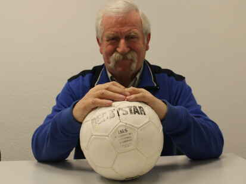
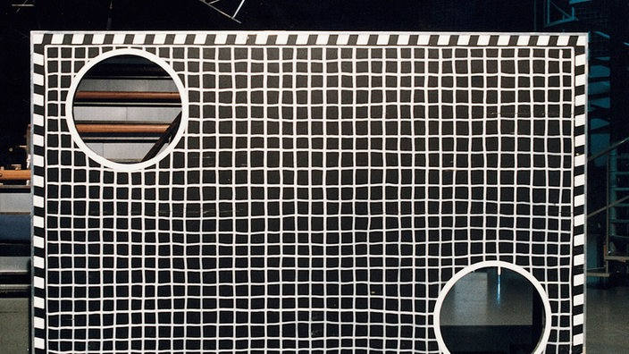
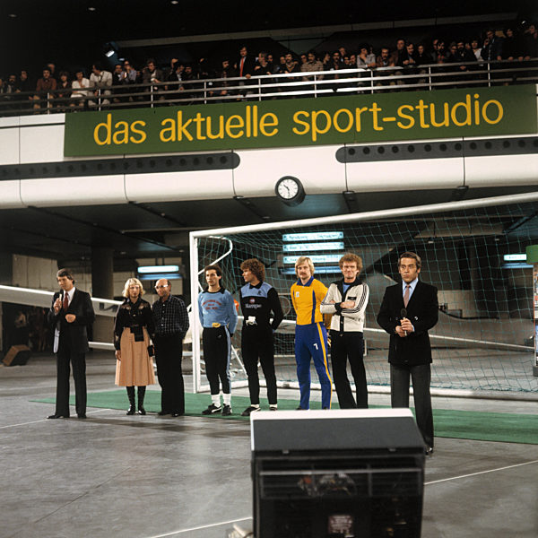
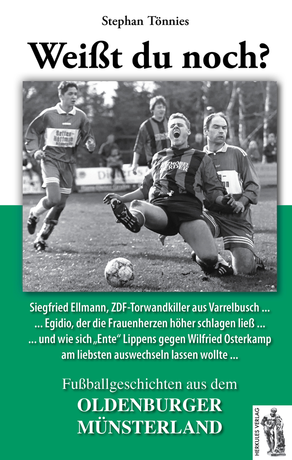

Den Ball kurz vor dem Loch auf einmal aufdeppen lassen – er springt flach auf und trifft das Ziel von unten. Eine Technik, die Ellmann über Jahre perfektioniert hatte.
Direktschuss – präzise und ohne Aufpraller, direkt ins Loch. Keine Tricks, nur Genauigkeit. Jahrelange Übung auf Volksfesten und Schützenfesten im Oldenburger Münsterland.
Als Siegfried Ellmann am 3. März 1973 vier Treffer erzielte, stellte er sich auf eine Stufe mit drei der bekanntesten Profifußballer Deutschlands. Alle drei waren Nationalspieler und Bundesligastars – Ellmann war Bezirksligaspieler aus dem Oldenburger Münsterland.
| Datum | Schütze | Verein | Treffer |
|---|---|---|---|
| 29. Jan. 1966 | Toni Allemann | 1. FC Nürnberg (Schweizer Nationalspieler) | 4 |
| 13. Nov. 1971 | Jürgen Grabowski | Eintracht Frankfurt | 4 |
| 13. Mai 1972 | Franz Beckenbauer | FC Bayern München | 4 |
| 3. März 1973 | Siegfried Ellmann | BV Varrelbusch (Bezirksliga!) | 4 |
| 18. Mai 1974 | Günter Netzer (erster 5-Treffer) | Real Madrid | 5 |

Siegfried Ellmann wurde am 12. März 1946 in Bonrechtern bei Visbek im Oldenburger Münsterland geboren. Er siedelte sich in Varrelbusch an, einem kleinen Ort in der Gemeinde Garrel im Landkreis Cloppenburg, Niedersachsen. Ellmann ist verwitwet und hat heute vier Kinder und acht Enkelkinder.
Fußballerisch war Ellmann sein Leben lang dem BV Varrelbusch treu, wo er als Mittelstürmer in der Bezirksliga spielte. Sein Vereinskamerad Werner Busse, der spätere NFV-Kreisvorsitzende, spielte überwiegend in der zweiten Mannschaft – und hatte dabei stets Ellmann als Konkurrenten auf seiner Position vor sich.
Zum Zeitpunkt seines TV-Auftritts 1973 arbeitete Ellmann als Reisender in der Eiscreme-Branche – ein Beruf, der ihm erlaubte, an Wochenenden Torwandschießen in der ganzen Region zu besuchen. Über fünf Jahre hatte er sich dabei als unschlagbarer Schütze einen Namen gemacht: rund zehn Fahrräder, ein Gebrauchtwagen, ein Mofa, eine Stereoanlage und ein Fernseher zählten zu seinen Gewinnen.
So dominant war er, dass er von mehreren Veranstaltungen ausgeschlossen wurde: „Man hat mich da verschiedene schon mal ausgeschlossen von verschiedenen Veranstaltungen. Indem man nun sagte, der Gewinner der letzten drei Jahre darf nicht mitmachen."
Neben dem Fußball war Ellmann Mitglied der St.-Hubertus-Schützengilde Varrelbusch, in der er 2011 für 50-jährige Mitgliedschaft geehrt wurde. Im Jahr 2023 arbeitete er als Fahrer für das Garreler Altersheim und lieferte „Essen auf Rädern" aus – eine Tätigkeit, die ihm nach eigenen Worten große Freude bereitete.
Seine Geschichte wurde vom Journalisten Stephan Tönnies im Buch Fußballgeschichten aus dem Oldenburger Münsterland (Herkules-Verlag) verewigt, unter dem Titel: „Siegfried Ellmann, ZDF-Torwandkiller aus Varrelbusch."

E-Mail: info@lunexium.de
Website: www.lunexium.de
E-Mail: info@lunexium.de
Website: www.lunexium.de
DE241868288
Haftung für Inhalte
Die Inhalte dieser Website wurden mit größter Sorgfalt erstellt. Für die Richtigkeit, Vollständigkeit und Aktualität der Inhalte können wir jedoch keine Gewähr übernehmen. Als Diensteanbieter sind wir gemäß § 7 Abs. 1 TMG für eigene Inhalte auf diesen Seiten nach den allgemeinen Gesetzen verantwortlich. Nach §§ 8 bis 10 TMG sind wir als Diensteanbieter jedoch nicht verpflichtet, übermittelte oder gespeicherte fremde Informationen zu überwachen oder nach Umständen zu forschen, die auf eine rechtswidrige Tätigkeit hinweisen.
Haftung für Links
Unser Angebot enthält Links zu externen Websites Dritter, auf deren Inhalte wir keinen Einfluss haben. Deshalb können wir für diese fremden Inhalte auch keine Gewähr übernehmen. Für die Inhalte der verlinkten Seiten ist stets der jeweilige Anbieter oder Betreiber der Seiten verantwortlich. Die verlinkten Seiten wurden zum Zeitpunkt der Verlinkung auf mögliche Rechtsverstöße überprüft. Rechtswidrige Inhalte waren zum Zeitpunkt der Verlinkung nicht erkennbar.
Urheberrecht
Die durch den Seitenbetreiber erstellten Inhalte und Werke auf diesen Seiten unterliegen dem deutschen Urheberrecht. Die Vervielfältigung, Bearbeitung, Verbreitung und jede Art der Verwertung außerhalb der Grenzen des Urheberrechtes bedürfen der schriftlichen Zustimmung des jeweiligen Autors bzw. Erstellers. Downloads und Kopien dieser Seite sind nur für den privaten, nicht kommerziellen Gebrauch gestattet.
Der Schutz Ihrer persönlichen Daten ist uns ein wichtiges Anliegen. Wir behandeln Ihre personenbezogenen Daten vertraulich und entsprechend den gesetzlichen Datenschutzvorschriften sowie dieser Datenschutzerklärung. Diese Website ist ein rein statisches Informationsangebot. Es werden keine Nutzerkonten erstellt und keine personenbezogenen Daten dauerhaft gespeichert.
Diese Website wurde mit Datenschutz als Kernprinzip entwickelt. Alle Inhalte werden statisch ausgeliefert; es findet keine serverseitige Verarbeitung von Nutzerdaten statt.
Kein Cookie-Consent erforderlich: Diese Website verwendet keine Tracking-Cookies und keine Drittanbieter-Werbe-Cookies. Gemäß DSGVO und ePrivacy-Verordnung ist für den Betrieb dieser Website kein Cookie-Consent-Banner erforderlich.
Technische Zugriffsdaten (Server-Logs)
Beim Aufruf dieser Website übermittelt Ihr Browser automatisch technische Daten an den Hosting-Server, darunter IP-Adresse, Browsertyp und -version, Betriebssystem, Referrer-URL sowie Datum und Uhrzeit des Zugriffs. Diese Daten werden ausschließlich zur Sicherstellung des technischen Betriebs und zur Fehleranalyse verwendet. Rechtsgrundlage ist Art. 6 Abs. 1 lit. f DSGVO (berechtigtes Interesse am sicheren Betrieb).
Browser-Speicher
Diese Website speichert keine Daten im lokalen Browser-Speicher (localStorage oder sessionStorage).
GitHub Pages (Hosting)
Diese Website wird über GitHub Pages (GitHub Inc., 88 Colin P. Kelly Jr. St., San Francisco, CA 94107, USA) gehostet. Beim Aufruf der Website werden technische Zugriffsdaten an die Server von GitHub übertragen. Weitere Informationen: GitHub Privacy Statement.
Internet Archive (Videoplayer)
Das eingebettete Video wird über das Internet Archive (Internet Archive, 300 Funston Ave., San Francisco, CA 94118, USA) ausgeliefert. Beim Abspielen des Videos können technische Daten an die Server des Internet Archive übertragen werden. Weitere Informationen: Internet Archive Terms of Use.
Google Fonts
Diese Website lädt Schriftarten über Google Fonts (Google LLC, 1600 Amphitheatre Parkway, Mountain View, CA 94043, USA). Dabei wird Ihre IP-Adresse an Google-Server übertragen. Rechtsgrundlage ist Art. 6 Abs. 1 lit. f DSGVO. Weitere Informationen: Google Datenschutzerklärung.
Diese Website bietet keine Möglichkeit zur Registrierung oder Anmeldung. Es werden keine Nutzerkonten angelegt und keine nutzergenerierten Inhalte gespeichert. Eine Kontaktaufnahme ist ausschließlich per E-Mail möglich (siehe Impressum).
Da diese Website keine personenbezogenen Daten dauerhaft speichert, sind die meisten DSGVO-Betroffenenrechte faktisch nicht anwendbar. Soweit dennoch personenbezogene Daten verarbeitet werden (z. B. in Server-Logs), haben Sie folgende Rechte:
Zur Ausübung Ihrer Rechte wenden Sie sich bitte an die im Impressum genannte Adresse. Zuständige Aufsichtsbehörde ist die Landesbeauftragte für den Datenschutz Niedersachsen (LfD).
Stand: März 2026